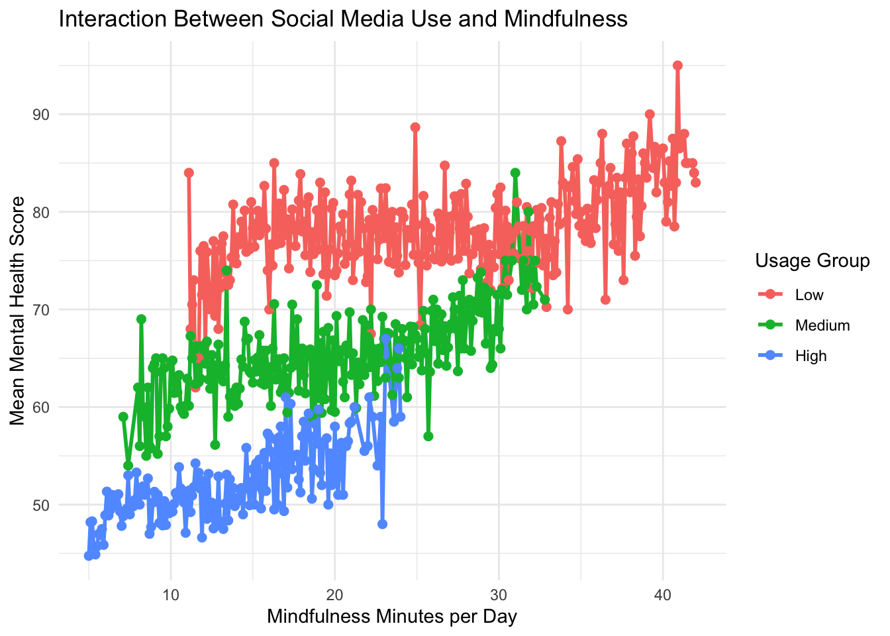

Mental Health Differences Across Social Media Usage Groups
STA 9750 – Final Individual Report
Author
Xuejian Wang
Introduction
This project examines the relationship between social media use and mental health among young adults. As a team, we explored multiple dimensions of technology use, including emotional well-being, academic outcomes, platform-specific effects, and global trends. This individual report focuses on Specific Question 5, which investigates whether different levels of social media use are associated with different mental health outcomes across users.
Overaching Question (OQ)
How is social media usage associated with indicators of anxiety, depression, and attention difficulties among young adults worldwide?
Specific Questions (SQ)
Can social media habits (platform, usage hours, content type) predict emotional well-being?
How does excessive daily social media use influence students’ academic performance?
Do some platforms (Tiktok, Instagram, Facebook) link more strongly to mental health or attention issues?
Have mental health difficulties risen alongside global social media use?
Do different levels of social media use associate with different mental health outcomes across users?
Data acquisition and processing
Three datasets were collected from Kaggle for this project. While the overall analysis draws on all three sources, this individual report focuses on the Tech Use & Stress Wellness dataset to address Specific Question 5.
# --- Load Tech Use & Stress Wellness dataset from Kaggle API ---# Step 1: Download the dataset zip file using Kaggle API# system("kaggle datasets download -d nagpalprabhavalkar/tech-use-and-stress-wellness")# Step 2: Unzip the downloaded file# unzip("tech-use-and-stress-wellness.zip")# Step 3: Load the CSV file into R# stress_wellness <- read.csv("tech_use_and_stress_wellness.csv")# Step 4: Inspect structure to confirm successful loading# str(stress_wellness)
Code
addiction <-read.csv("/Users/xjw/Downloads/9750 final/Students Social Media Addiction.csv",header=TRUE )mental_wellbeing <-read.csv("/Users/xjw/Downloads/9750 final/Tech_Gadget_Usage_and_Mental_Wellbeing.csv",header=TRUE)stress_wellness <-read.csv("/Users/xjw/Downloads/9750 final/Tech_Use_Stress_Wellness.csv",header=TRUE)
Data analysis
Adjustment of Specific Question 5 (SQ5)
During the initial exploration of SQ5, appropriate indicators to address the original question were not available in the selected datasets. To ensure alignment with the Overarching Question (OQ) and avoid overlap with the first four specific questions, SQ5 was revised.
The original SQ5 asked: “Do users who actively post or share content report different emotional well-being compared to passive consumers?” Prior research has highlighted meaningful distinctions between active social media use (e.g., posting and sharing) and passive use (e.g., browsing and consuming content). For example, studies such as Active and passive behavior in social media and Differences between Active and Passive Social Media Usage on Well-Being in Reference to Adolescents suggest that these usage styles may have different psychological implications. However, the datasets used in this project do not include behavioral indicators that allow users to be classified as active or passive. As a result, the original version of SQ5 could not be empirically tested and remains a topic for future research.
The revised SQ5 is: “Do different levels of social media use associate with different mental health outcomes across users?” This adjusted question focuses on usage intensity rather than usage style, enabling group-based comparisons that are observable in the available data. Importantly, the revised SQ5 does not overlap with SQ1 (prediction), SQ2 (academic performance), SQ3 (platform-specific effects), or SQ4 (temporal trends), while still directly supporting the project’s overarching research objective.
Relationship between Mental Health Score and Usage Groups
Social media usage was categorized into low, medium, and high groups based on tertiles of daily social media hours. Participants in the lowest third of usage were classified as low users, those in the middle third as medium users, and those in the highest third as high users. This tertile-based approach ensured balanced group sizes and avoided arbitrary cutoffs. To address Specific Question 5, mental health scores were compared across these usage groups using a one-way ANOVA, followed by Tukey post-hoc tests and a bootstrap robustness check.
One-Way ANOVA
One-Way ANOVA showed that Social media usage level is associated with mental health outcomes. There are statistically significant differences in mean mental health scores between at least two usage groups, with a p-value almost 0 (<2e-16), meaning that this result is not due to chance. This is a very strong result with 5,000 observations.
Post-hoc Tukey Test
After ANOVA showed a significant overall effect, Tukey’s Honestly Significant Difference (HSD) test compares every pair of group means, while controlling for multiple comparisons. It demonstrates that the difference remains highly significant even after correcting for multiple comparisons, with p < 0.001 (rounded to 0 by R). For example, the medium usage group scored on average 13.34 points lower on mental health than the low usage group, with a 95% confidence interval ranging from −13.91 to −12.76, and this difference remained statistically significant after correction for multiple comparisons (p < .001).
Medium users have significantly lower mental health scores than low users.
High users report much worse mental health than low users.
High users also have significantly lower mental health scores than medium users.
All differences are negative, which means that as social media usage increases, mental health scores decrease. All group differences are statistically significant, showing a strong monotonic trend.
Code
# Step 3: Post-hoc comparisonstukey_res <-TukeyHSD(anova_model) # Use Tukey instead of multiple t-tests# Convert the usage_group results to a data frametukey_table <-as.data.frame(tukey_res$usage_group)# Add comparison names as a columntukey_table$Comparison <-rownames(tukey_table)rownames(tukey_table) <-NULL# Remove row names to avoid duplicate first column# Reorder columnstukey_table <- tukey_table[, c("Comparison", "diff", "lwr", "upr", "p adj")]library(DT)datatable( tukey_table,colnames =c("Comparison","Mean Difference","Lower 95% CI","Upper 95% CI","Adjusted P-Value" ),options =list(pageLength =5,searching =FALSE,info =FALSE,paging =FALSE,autoWidth =TRUE ),caption ="Tukey HSD Post-hoc Comparisons for Usage Groups") |>formatRound(columns =c("diff", "lwr", "upr"),digits =3 )
Visulization
The graph below visulizes this graded relationship between social media use and mental health, with progressively lower mental health scores observed as usage levels increased.
Code
library(ggplot2)ggplot(df, aes(x = usage_group, y = mental_health_score)) +geom_boxplot(fill ="skyblue") +labs(title ="Mental Health Scores by Social Media Usage Level",x ="Social Media Usage Level",y ="Mental Health Score" ) +theme_minimal()
Bootrap test between High users and Low users
To confirm the robustness of the group differences, a nonparametric bootstrap analysis with 5,000 resamples was conducted. The 95% bootstrap percentile confidence interval is not crossing zero, indicating a statistically significant and stable difference. This result supports the findings of the ANOVA and Tukey post-hoc tests.
Observed mean difference: High social media users scored about 26.7 points lower in mental health than low users, consistent with the Tukey post-hoc results.
Bootstrap bias: The bias is near zero, indicating the estimate is stable and not affected by resampling variation.
Standard error: The estimate varies by only about 0.23 points across resamples, showing high precision.
95% confidence interval: The true mean difference is likely between −27.19 and −26.27 points, confirming a strong and reliable difference between groups.
The graph of bootstrap distribution of mean difference between high and low usage groups confirms the difference is real, with the entire distribution is far below zero.
Code
library(boot)# Function to compute mean differencemean_diff_HL <-function(data, indices) { d <- data[indices, ]mean(d$mental_health_score[d$usage_group =="High"]) -mean(d$mental_health_score[d$usage_group =="Low"])}set.seed(123) # for reproducibilityboot_result <-boot(data = df,statistic = mean_diff_HL,R =5000)boot.ci <-boot.ci( boot_result,type ="perc")hist( boot_result$t,main ="Bootstrap Distribution of Mean Difference (High − Low)",xlab ="Mean Difference in Mental Health Score",col ="#F07C86",border ="white",xlim =c(-28, 1) # extend axis so 0 is visible)abline(v =0, col ="red", lwd =2)
Relationship Extension (Usage Group × Mindfulness)
After identifying significant differences in mental health scores across social media usage groups using a one-way ANOVA, the analysis was extended with a two-way ANOVA to examine whether mindfulness practice moderates this relationship.
The two-way ANOVA results show:
A significant main effect of social media usage group, indicating that mental health scores differ across low, medium, and high users.
A significant main effect of mindfulness minutes per day, suggesting that greater mindfulness practice is associated with higher mental health scores overall.
A significant interaction between usage group and mindfulness, indicating that the relationship between mindfulness and mental health varies depending on social media usage level.
The interaction plot further illustrates that while increased mindfulness is associated with improved mental health across all groups, individuals with high social media usage consistently report lower mental health scores, even at higher levels of mindfulness practice.
Code
anova_model2 <-aov(mental_health_score ~ usage_group * mindfulness_minutes_per_day, data = df)# summary(anova_model3)ggplot(df, aes(x = mindfulness_minutes_per_day,y = mental_health_score,color = usage_group)) +stat_summary(fun = mean, geom ="line", linewidth =1) +stat_summary(fun = mean, geom ="point", size =2) +labs(title ="Interaction Between Social Media Use and Mindfulness",x ="Mindfulness Minutes per Day",y ="Mean Mental Health Score",color ="Usage Group" ) +theme_minimal()

Together, these results strengthen SQ5 by demonstrating that social media usage levels are associated with distinct mental health outcomes. They also support the OQ by showing that mental health indicators are shaped not only by usage intensity but also by behavioral factors such as mindfulness, with usage level modifying this relationship.
Summary
Both parametric analyses (one-way ANOVA with Tukey post-hoc tests and two-way ANOVA) and nonparametric validation (bootstrap analysis) consistently indicate that higher levels of social media usage are associated with significantly poorer mental health outcomes. Overall, individuals with high social media use report substantially lower mental health scores compared to moderate and low users.